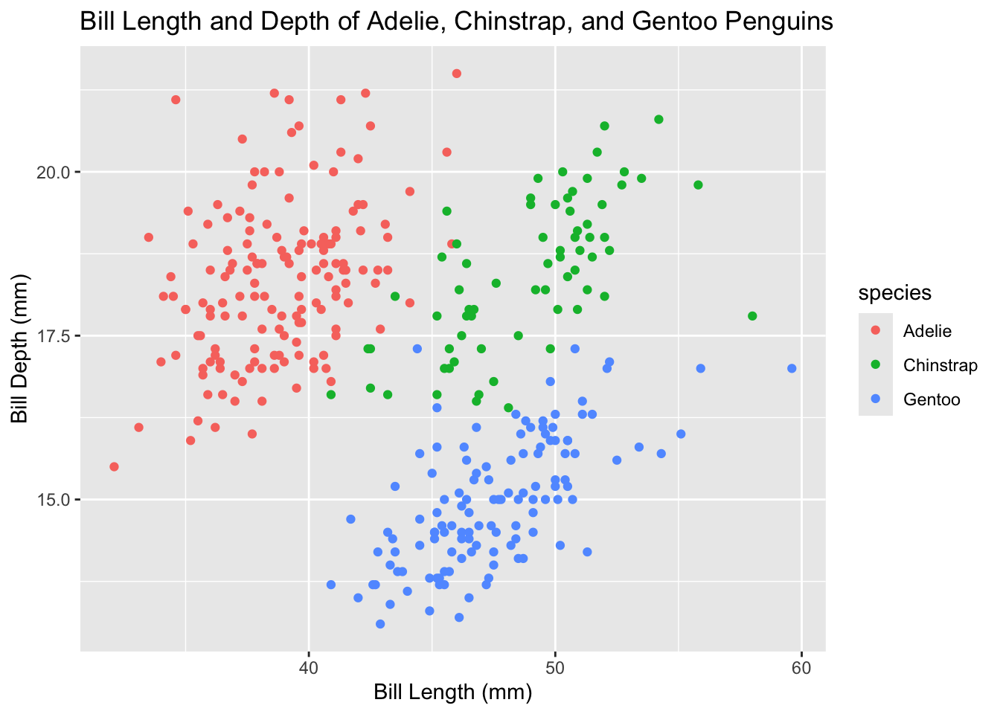

#see code chunk hereWeek 6 lecture
How to add code chunks
(green button above) or command option i
code chunk options: add a #| in the chunk to control what you want printed in the chunk, like #| warning: false
#warning: false is typed here but you canʻt see it in the output file
#this prevents warnings from printing for this chunk only, if you want to apply it to the whole doc, add it to the very topor like this to add defaults at the top of your doc:
execute: warning: false # suppress warnings in all chunks message: false # suppress package loading messages echo: false # hide code by default (show results only) eval: true # run all chunks (the default)
Use inline r code rather than manually typing numbers
so that numbers can automatically update when you run things/things are more reproducible
# In your prose (not a code chunk), write:
# backtick + r + space + expression + backtick, not apostrophe!!
# Examples:
# The dataset has `nrow(penguins)` rows.
# The mean is `round(mean(x, na.rm = TRUE), 1)`.
# Analysis run on `Sys.Date()`.example with palmer penguins package
#load libaries
library(palmerpenguins)
Attaching package: 'palmerpenguins'The following objects are masked from 'package:datasets':
penguins, penguins_rawlibrary(tidyverse)── Attaching core tidyverse packages ──────────────────────── tidyverse 2.0.0 ──
✔ dplyr 1.2.1 ✔ readr 2.2.0
✔ forcats 1.0.1 ✔ stringr 1.6.0
✔ ggplot2 4.0.3 ✔ tibble 3.3.1
✔ lubridate 1.9.5 ✔ tidyr 1.3.2
✔ purrr 1.2.2 ── Conflicts ────────────────────────────────────────── tidyverse_conflicts() ──
✖ dplyr::filter() masks stats::filter()
✖ dplyr::lag() masks stats::lag()
ℹ Use the conflicted package (<http://conflicted.r-lib.org/>) to force all conflicts to become errorsThe dataset has 344 rows and 8 columns.
The mean bill length of penguins is 44 millimeters.
also always use the here function with quarto docs
Publishing the quarto doc with posit connect cloud
Anyone with the link can view the doc, and everytime you re-publish the link stays the same How we will submit the homework!
Lecture pt 2
Working with figures, you can change the size, resolution, file type, etc. For practice, make a simple penguin plot
pplot <- ggplot(penguins,
mapping = aes(x=bill_length_mm, y=bill_depth_mm, color=species)) +
geom_point() +
labs(x="Bill Length (mm)", y="Bill Depth (mm)", title = "Bill Length and Depth of Adelie, Chinstrap, and Gentoo Penguins")How to cross reference figures in your quarto script and linkable in your prose
step 1: Give your chunk a label starting with fig-
Warning: Removed 2 rows containing missing values or values outside the scale range
(`geom_point()`).
you can reference this figure anywhere in your prose by: @the figure label
As shown in Figure 1, bill dimensions differ clearly by species.
You can do the same with tables, where label must start with tbl-, use package kableExtra
library(kableExtra)
Attaching package: 'kableExtra'The following object is masked from 'package:dplyr':
group_rowspenguins |>
group_by(species) |>
summarise(mean_bill = mean(bill_length_mm, na.rm = TRUE)) |>
kbl()| species | mean_bill |
|---|---|
| Adelie | 38.79139 |
| Chinstrap | 48.83382 |
| Gentoo | 47.50488 |
Then you can reference in your prose like this:
Mean bill lengths are summarised in Table 1.